K-Nearest Neighbours: Decision Boundaries#
import numpy as np
import matplotlib.pyplot as plt
from sklearn import datasets, neighbors
# https://anaconda.org/conda-forge/mlxtend
from mlxtend.plotting import plot_decision_regions
import pandas as pd
---------------------------------------------------------------------------
ModuleNotFoundError Traceback (most recent call last)
~\AppData\Local\Temp/ipykernel_13488/2568969536.py in <module>
3 from sklearn import datasets, neighbors
4 # https://anaconda.org/conda-forge/mlxtend
----> 5 from mlxtend.plotting import plot_decision_regions
6 import pandas as pd
ModuleNotFoundError: No module named 'mlxtend'
def knn_comparision(data, k):
X = data[['x1','x2']].values
y = data['y'].astype(int).values
clf = neighbors.KNeighborsClassifier(n_neighbors=k)
clf.fit(X, y)
# Plotting decision regions
plot_decision_regions(X, y, clf=clf, legend=2)
# Adding axes annotations
plt.xlabel('X1')
plt.ylabel('X2')
plt.title('Knn with K='+ str(k))
plt.show()
data = pd.read_csv('data/6.overlap.csv', names=['x1', 'x2', 'y'])
for i in [1, 5, 15, 30, 45]:
knn_comparision(data, i)
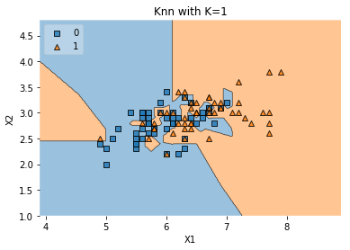
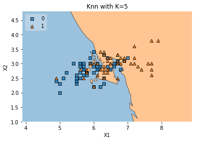
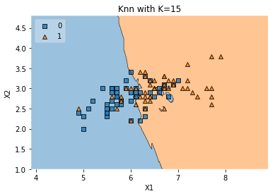
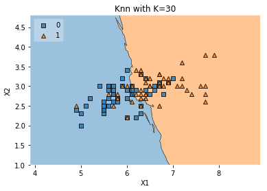
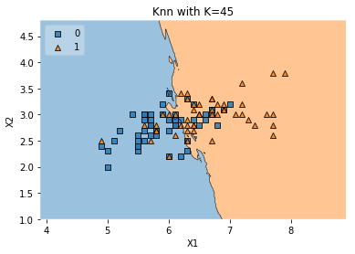
data = pd.read_csv('data/1.ushape.csv', names=['x1', 'x2', 'y'])
print(data.head(3))
for i in [1, 5, 15, 30, 45]:
knn_comparision(data, i)
x1 x2 y
0 0.031595 0.986988 0.0
1 2.115098 -0.046244 1.0
2 0.882490 -0.075756 0.0
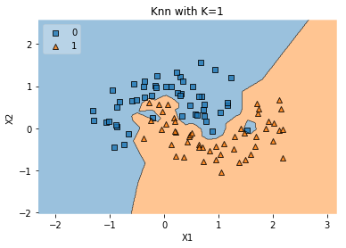
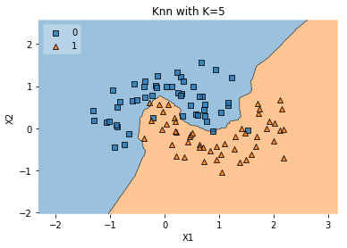
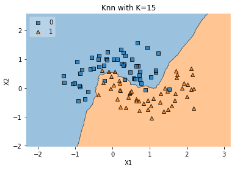
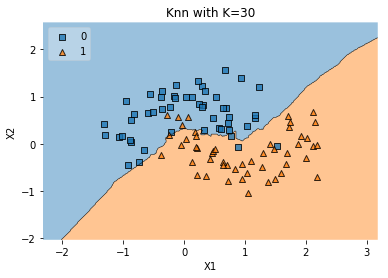
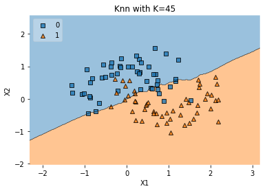
data = pd.read_csv('data/2.concerticcir1.csv', names=['x1', 'x2', 'y'])
print(data.head(3))
for i in [1, 5, 15, 30, 45]:
knn_comparision(data, i)
x1 x2 y
0 -0.382891 -0.090840 1.0
1 -0.020962 -0.477874 1.0
2 -0.396116 -1.289427 0.0
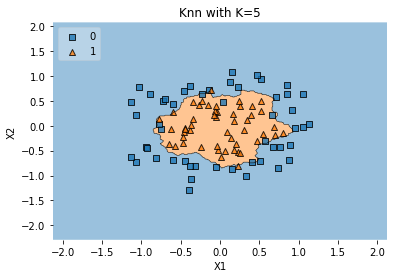
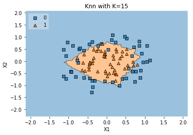
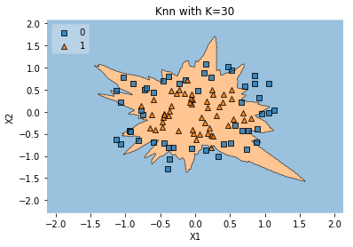
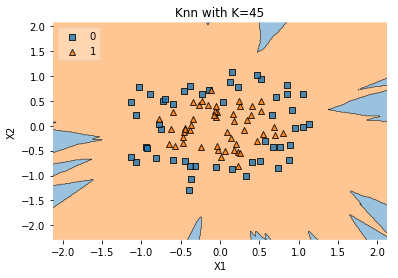
data = pd.read_csv('data/3.concertriccir2.csv', names=['x1', 'x2', 'y'])
print(data.head(3))
for i in [1, 5, 15, 30, 45]:
knn_comparision(data, i)
x1 x2 y
0 0.700335 -0.247068 0.0
1 -3.950019 2.740080 1.0
2 0.150222 -2.157638 1.0
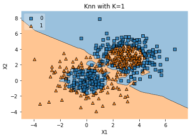
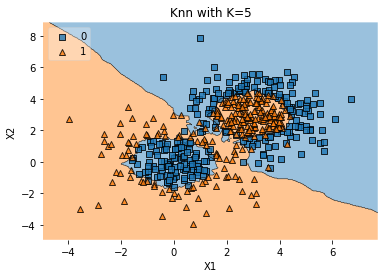
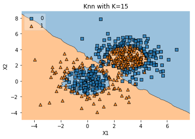
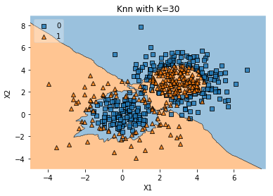
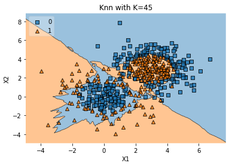
data = pd.read_csv('data/4.linearsep.csv', names=['x1', 'x2', 'y'])
print(data.head(3))
for i in [1, 5, 15, 30, 45]:
knn_comparision(data, i)
x1 x2 y
0 -0.177497 0.930496 1.0
1 1.977424 1.766155 0.0
2 1.800024 1.700343 0.0
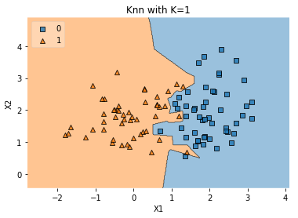
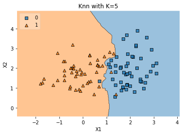
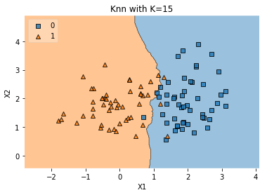
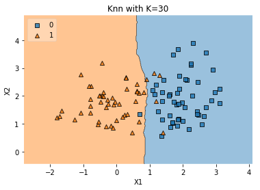
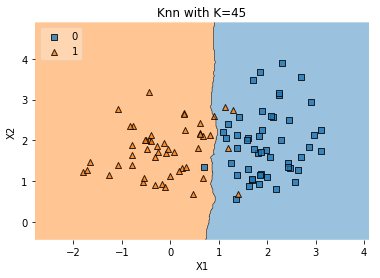
data = pd.read_csv('data/5.outlier.csv', names=['x1', 'x2', 'y'])
print(data.head(3))
for i in [1, 5, 15, 30, 45]:
knn_comparision(data, i)
x1 x2 y
0 -17.897000 7.662423 0
1 -26.343161 -3.055257 0
2 -19.059771 -8.531838 0
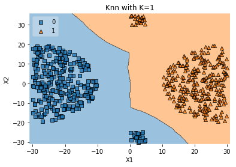
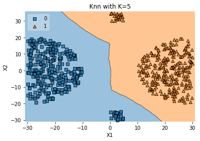
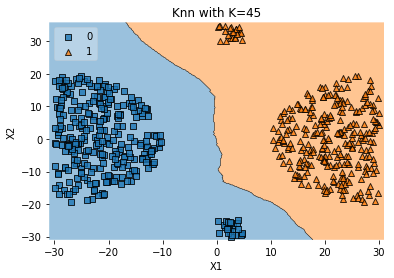
data = pd.read_csv('data/7.xor.csv', names=['x1', 'x2', 'y'])
print(data.head(3))
for i in [1, 5, 15, 30, 45]:
knn_comparision(data, i)
x1 x2 y
0 1.764052 0.400157 -1.0
1 0.978738 2.240893 -1.0
2 1.867558 -0.977278 1.0
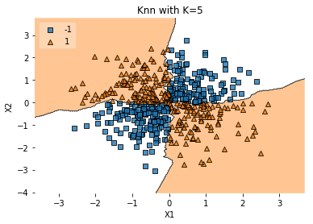
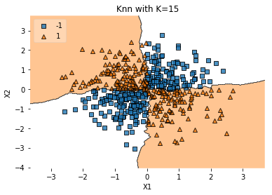
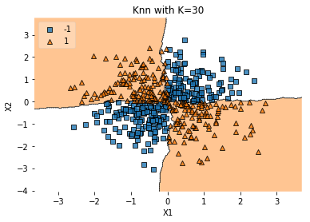
data = pd.read_csv('data/8.twospirals.csv', names=['x1', 'x2', 'y'])
print(data.head(3))
for i in [1, 5, 15, 30, 45]:
knn_comparision(data, i)
x1 x2 y
0 -2.543456 -10.816358 0
1 9.434466 -2.572000 0
2 3.368646 -10.194671 0
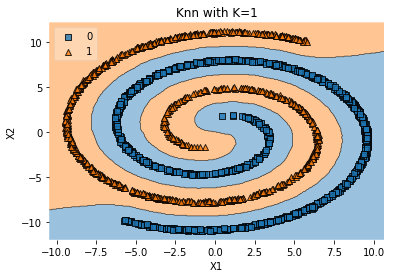
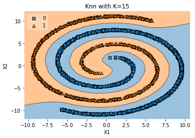
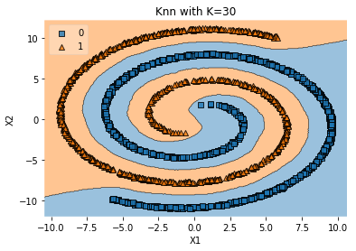
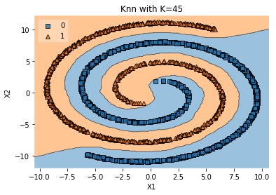
data = pd.read_csv('data/9.random.csv', names=['x1', 'x2', 'y'])
print(data.head(3))
for i in [1, 5, 15, 30, 45]:
knn_comparision(data, i)
x1 x2 y
0 0.374 1.08 0.0
1 0.445 1.14 1.0
2 0.514 1.13 0.0
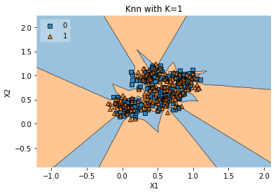
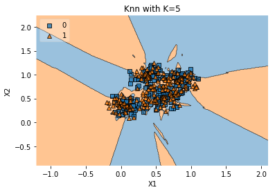
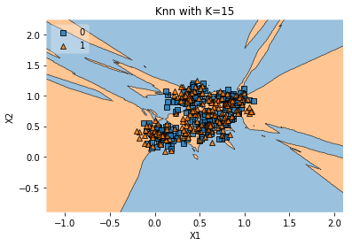
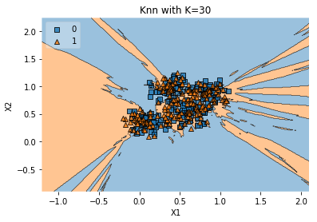
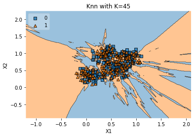